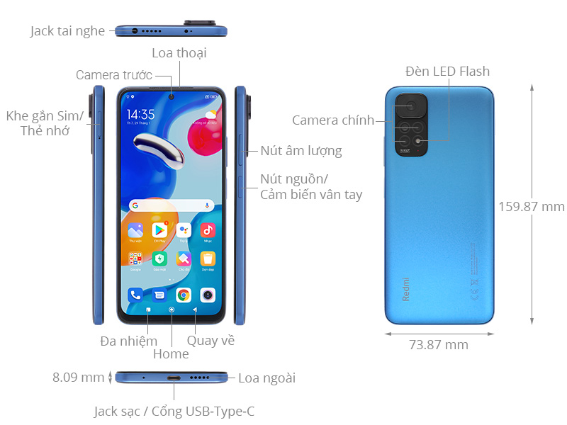
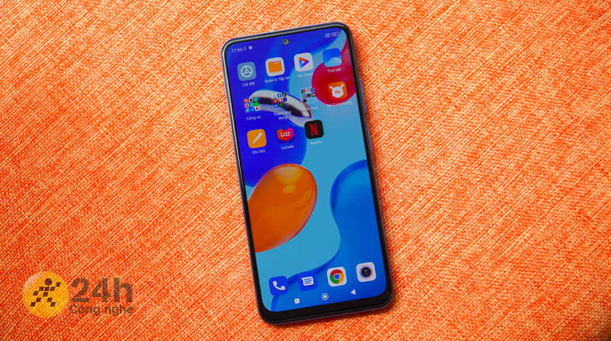
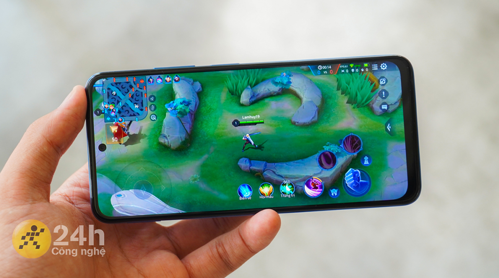
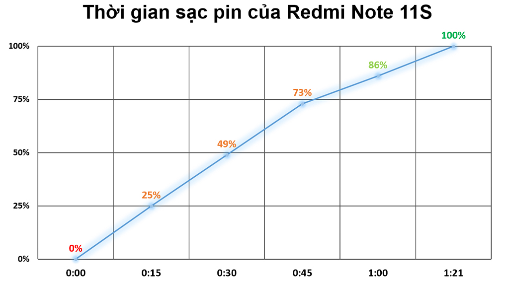
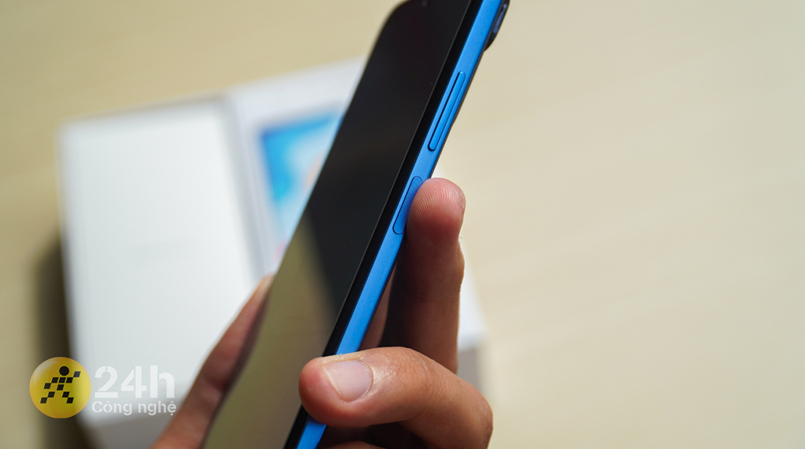

Giá niêm yêt: 6.690.000₫
Có một thiết kế khung viền thời thượng, một hiệu năng đầy mạnh mẽ cũng như được tích hợp nhiều tiện ích đầy hữu ích. Xiaomi Redmi Note 11S sẵn sàng đem đến cho bạn những trải nghiệm vô cùng hoàn hảo về chơi game, các tác vụ sử dụng hằng ngày hay sự ấn tượng từ vẻ đẹp bên ngoài.
Màn hình của Redmi Note 11S được thiết kế dạng nốt ruồi cho không gian hiển thị rộng lớn với các viền khá mỏng giúp máy trở nên đẹp và thanh thoát hơn
Dù chỉ thuộc phân khúc giá tầm trung nhưng Xiaomi đã trang bị cho Note 11S tấm nền AMOLED mang lại khả năng hiển thị tốt, màu đen sâu hơn, độ tương phản cao và còn nâng cao khả năng hiển thị màu sắc sống động nhờ dải màu rộng DCI-P3. Nên có thể nói dù xem phim trên YouTube hay chơi game thì mình thật sự cảm thấy mãn nhãn với màn hình này.
Ảnh chụp bởi Redmi Note 11S ở điều kiện đủ sáng thu lại chi tiết tốt, màu sắc tươi tắn, độ tương phản cao. Hình ảnh sau khi chụp xong đều được xử lý lại, chụp ngược sáng cũng không bị cháy sáng nhờ tích hợp HDR và AI.
Đặc biệt là hình ảnh khi chụp ở chế độ chụp đêm cũng rất tuyệt vời, cân bằng được ánh sáng và bù sáng tốt cho các vùng quá tối.
Camera selfie 16 MP cho hình chụp đẹp, có thêm AI nên da mặt được xử lý khá tinh tế. Bên cạnh đó cũng tích hợp đầy đủ chế độ làm đẹp, bộ lọc màu cho bạn thoải mái lựa chọn để có được những tấm hình ưng ý nhất.
Redmi Note 11S hỗ trợ RAM 8 GB nên khả năng đa nhiệm rất tốt, mở/tắt ứng dụng và chuyển tab đều mượt mà, ít gặp tình trạng đứng hay giật lag.
Với dòng chip Helio G96 thì Note 11S có thể nói chiến game khá tốt trong tầm giá. Một số tựa game như Liên Quân Mobile hay PUBG Mobile có thể bật đồ họa trung bình, thao tác khá êm và mượt, cũng ít thấy tình trạng bị drop khung hình.
Một điểm nữa để Note 11S giúp bạn cày game là nhờ hệ thống tản nhiệt đa chiều vô cùng đặc biệt. Công nghệ Liquid Cool bao gồm nhiều lớp than chì và lá đồng, diện tích tản nhiệt 10005 mm2 giúp làm mát nhanh hơn. Vì vậy nên dù đã chiến qua 2 trận PUBG (mỗi trận khoảng 30 phút) khi cầm máy trên tay mình vẫn không bị quá nóng.
Với viên pin dung lượng 5000 mAh thì khi sử dụng liên tục đa tác vụ từ chơi game, lướt web, Facebook, xem YouTube,... thời gian dùng được khoảng 8 tiếng 42 phút. Và chỉ mất khoảng 1 tiếng 21 phút để sạc đầy từ 0 - 100% pin nhờ công nghệ sạc nhanh 33 W Pro.
Redmi Note 11S được hoàn thiện từ nhựa nguyên khối, các cạnh được làm phẳng theo xu hướng hiện thời nhưng cảm giác cầm nắm trên tay vẫn thoải mái, không quá cấn. Phần mặt lưng được thiết kế giả kính nhám nên hạn chế được câu chuyện bám mồ hôi và dấu vân tay.
Ngoài ra thì Redmi Note 11S vẫn trang bị đầy đủ một số công nghệ hiện đại như mở khóa bằng khuôn mặt, mở khóa vân tay cạnh viền giúp cho người dùng có được nhiều phương thức mở khóa đa dạng, nhanh chóng.
Nói tóm lại, ở phân khúc giá tầm trung này thì Note 11S là một chiến binh được đánh giá khá cao với tập hợp các ưu điểm như màn hình hiển thị tốt ngay cả khi ngoài trời, hiệu năng ổn định thích hợp để cày game, sạc nhanh hơn, viên pin lớn nằm trong một thân máy vẫn mỏng nhẹ và tinh tế như vậy.